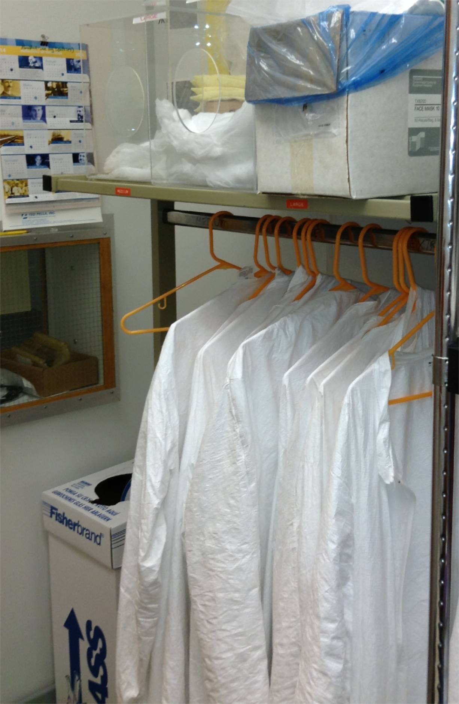

Gowning for the Cleanroom
SUMMARY:
- Frock (and Tyvek pants if legs are bare)
- Bouffant cap
- Shoe covers
- Thin Nitrile Gloves
- Splash Goggles (liquids) or Safety Glasses (non-liquid work)
- Add: Acid apron and heavy
Trionic gloves (
chemical resistance data) for hazardous chemical work.
Detailed Gowning Procedure
-
Select an appropriate Tyvek frock jacket (S, M, L, XL, or XXL) from the
hanger; zip or snap it up all the way.
-
If you are wearing shorts, also put on Tyvek pants hanging on the right of the rack.
-
The bouffant cap (hair net) goes over the ears, with hair tucked underneath. Medium bouffant caps (21",
in the left bin) fit over all but the longest hair.
-
Select shoe-covers (M or L) from the right hand bin. Sitting on the bench
facing the rack, keep uncovered shoes to the left and covered shoes to the
right, swinging your foot from one side to the other as you put the cover on.
Be sure they cover the entire shoe.
-
Don a pair of light weight Nitrile disposable gloves (M or L). [Latex gloves
are also available if the slightly higher finger sensitivity they provide is
critical to your work, but they are more expensive and intrinsicly slightly
less clean.]
-
Step on the adhesive "tackey-mat" at least twice before entering the
lab.
-
Enter the lab directly and let the door close. Never hold the door open.
-
Eye protection is REQUIRED in the lab. Wear splash goggles if you will be working with liquid chemicals which may splash, otherwise wear safety glasses.
- Use heavier Trionic acid/solvent gloves on top of the Nitrile gloves when using
acids, caustics, or organic solvents (i.e. most any time you are in the hood).
NOTE: Nitrile gloves do not hold up to Acetone well; they rip easily after
exposure.
-
When using acids or caustics, you must wear:
-
Eye protection--chemical splash goggles
-
Double gloves (Nitrile plus Trionic)
-
An Acid Apron
-
Never remove garments in the cleanroom; if you need to remove a sweater, return to the gowning room first.
-
OCCASIONAL VISITORS:
After you are done for the day please dispose the hair nets and gloves, place
the boot covers in the marked (left) bin, and hang up the frock jacket.
-
REGULAR USERS:
You may hang the your gloves and bouffant cap on your clip. You may reuse up to
three times, but always discard after heavy wear, if soiled with chemicals.
Place the boot covers in the marked (left) bin, and hang up the frock jacket.
-
Use only equipment you are authorized to use. If you are in doubt about how to
use a piece of equipment, ask first.
In case of any EQUIPMENT PROBLEMS or failure contact Chris Levey (217e Cummings, 646-2071). In case of a building problem, contact the above or Gary Durkee (17 Cummings, 646-3457)
In case of SAFETY problems:
- EMERGENCY/AMBULANCE:
campus line: dial 911
outside line: dial 911
- Dartmouth Chemical Safety Officer/followup on CHEMICAL SPILL response:
(first dial 911 if an emergency)
Mike Cimis at 6-0235 (or 603-646-0235 off campus)
OR
Environmental Health and Safety at 6-1762 (603-646-1762).
- Building safety officer:
Gary Durkee at 6-3457(or 603-646-3457 off campus)
- Thayer Safety Director:
Chris Levey at 6-2071 (or 603-646-2071 off campus)